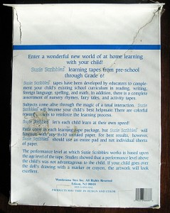

11th February 2013, 10:21 am
I have the trucks pictured below. They are all 1/64 scale made by the Ertl Co. and are still in their original packaging. They are all die cast metal with rubber tires on them.
First is the limited edition Land-O-Lakes produced for and sold only by the Toy Farmer magazine in 1995. I think it sold originality for $29.00. As you can see in the picture, it has a beautiful picture on the side of the trailer. The truck in the picture is of the one I have on display, The one I am selling is still in its original box.
Second is the Blue and White Coke Freight-Liner made by Ertl in 1998
Third is the Yellow Coke Peterbuilt made by Ertl in 1997
I have decided that one of each of these trucks is all I need so I have decided to part with the extra ones. I will sell them for $20.00 each, plus postage. I do take PayPal. I can be reached at rodander@frontiernet.net
6th February 2013, 10:53 am
I have had this G I Joe Tiger Force Lunch Box on a high shelf in my workshop for years. I always liked the graphics on it. It is by Aladdin and it has the thermos with it. It has a 1988 copyright by Hasbro inc. on it. It shows almost no wear, I don’t think it was ever used. I don’t remember where I got it, but I have no box or papers with it. I saved it because I thought my grand children might like it, but they never did. This one is really nice and I am asking $16.00 plus postage for it. I do take PayPal and will consider offers. I can be reached at rodander@frontiernet.net
3rd February 2013, 02:05 pm
I have seven Teddy Ruxpin Answer Box sets. They have a unit with a book attached that plugs into the Teddy Ruxpin and a cassette tape. It is the counting is fun set. I know very little about this toy and am unable to test them. They are dated 1985 and as you can see from the pictures they look new. Five sets have all original packing, latch is on tape yet and instructions are in box. One set is complete but lacks the Styrofoam packing on one end of box. The seventh box has the main plug in unit and book along with the instructions. The cassette tape and the packing are missing.
I am asking $10.00 apiece for the Answer Box sets and would consider offers, especially on combinations of toys. I have more Teddy Ruxpin things I will describe below.
I have a Teddy’s Winter Adventure Book and Tape. by World of Wonder Inc. It has a 1985 copyright. It is in its box, but the top of the box is torn. The book and tape don’t look as if they were ever played with much. I am asking $10.00 plus postage for this set.
I have the Teddy Ruxpin Lullabies book and tape shown in the picture. It has a 1985 copyright also. The book looks unused but the tape shows some handling. There is no box or papers with it. I would like $ 8.00 plus postage for this set

I also have two Picture show discs and the tape that goes with them. They have a 1989 Copyright. The title is Gimmick Learns a Lesson. I have no box or papers with these. They have been played with but look Ok. Interestingly printed on the picture disk is the statement, ” will not work in View-Master”.
I am asking $6.00 plus postage for this set. I am open to offers and I do accept PayPal. I would also be happy to answer questions. I can be reached at rodander@frontiernet.net.
1st February 2013, 07:53 pm
I found this Susie Scribbles ABC set tucked away. It was made by Wonderama Toys Inc. It Contains a cassette tape, Crayola Crayons, pad of Paper and good works stickers. The set is listed for preschool to age 6 children. The date on the tape is 1987. The date on the crayons is 1988.The crayons are unused. I don’t think the rest of set has been used much if at all.
As you can see in the picture some stickers are missing and several are loose on the sheet. It is interesting that the stickers are the kind you need to moisten or lick to make stick.
The box and packing are as you see in the picture. The graphics are good but there is damage from tape. The back of the box has more Damage and tears than the front.
This set would make a nice addition for someone who has the Susie Scribbles doll.

I am asking $10.00 plus postage for the set. I would consider offers and I do acept PayPal. I can be reached at rodander@frontiernet.net

{kind=link}
{kind=link}
{kind=link}
{kind=link}
{kind=link}
{kind=link}
{kind=link}
{kind=link}
{kind=link}
{kind=link}